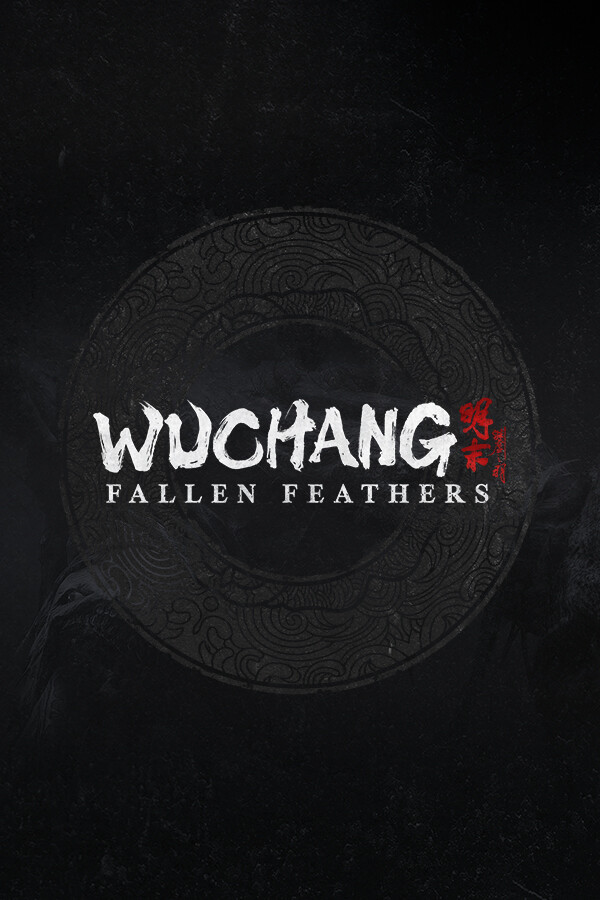

Game profile

Wuchang: Fallen Feathers
Every archived year-end list appearance, including placement and points earned.
About the Game
Set in the chaotic final years of the Ming Dynasty, WUCHANG: Fallen Feathers is an exploration of the hauntingly beautiful landscapes of imperial China and the battle against mysterious forces that transform a grim reality to supernatural horror.
| Released | 2025-07-23 |
|---|---|
| Developer | Leenzee Games, Leenzee |
| Publisher | 505 Games |
| Genres | Action, Adventure, RPG |
| Platforms | PC, PlayStation 5, Xbox Series S/X |
SingleplayerSteam AchievementsFull controller supportSteam CloudAtmosphericRPGStory RichOpen WorldThird PersonGoreExplorationDifficult
Where to Buy
Game information provided by RAWG.
2List appearances
1Years represented
Points by Year
42025 points
List History
| Year | Source | List | Placement | Points |
|---|---|---|---|---|
| 2025 | GameSpot | The Best Games Of 2025 | Unranked | 1 |
| 2025 | NME | THE 20 BEST GAMES OF 2025 | NME.com | 17 | 3 |